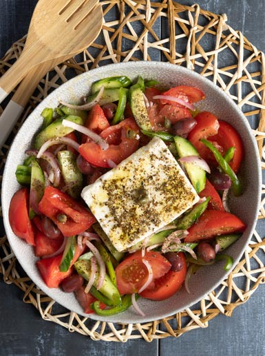

Greek Salad (Choriatiki) Recipe!
Home

Description
The quintessential Greek salad, or Choriatiki, is a refreshing and vibrant dish that embodies the simplicity of Mediterranean cuisine. Made with sun-ripened tomatoes, crisp cucumbers, sharp red onions, crunchy green bell peppers, briny Kalamata olives, and a generous block of authentic feta cheese, it is drizzled with extra virgin olive oil and a sprinkle of dried oregano. This salad is not just a side dish but a flavorful meal on its own, perfect for warm summer days.
Ingredients
Vegetables
- Tomatoes: 3-4 ripe tomatoes, cut into wedges
- Cucumber: 1 large cucumber, sliced into rounds
- Onion: 1/2 red onion, thinly sliced
- Peppers: 1 green bell pepper, sliced
Dressing & Toppings
- Feta: 200g block of feta cheese
- Olives: A handful of Kalamata olives
- Olive oil: 3-4 tbsp extra virgin olive oil
- Herbs: 1 tsp dried oregano, salt to taste
Steps
- Prepare vegetables: Wash and chop the tomatoes into wedges, slice the cucumber, and cut the pepper and onion into thin strips.
- Assemble: Place the tomatoes, cucumber, pepper, and onion in a large bowl.
- Add olives: Scatter the Kalamata olives over the vegetables.
- Finish: Place the block of feta cheese on top. Drizzle with extra virgin olive oil and sprinkle generously with dried oregano and a pinch of salt.